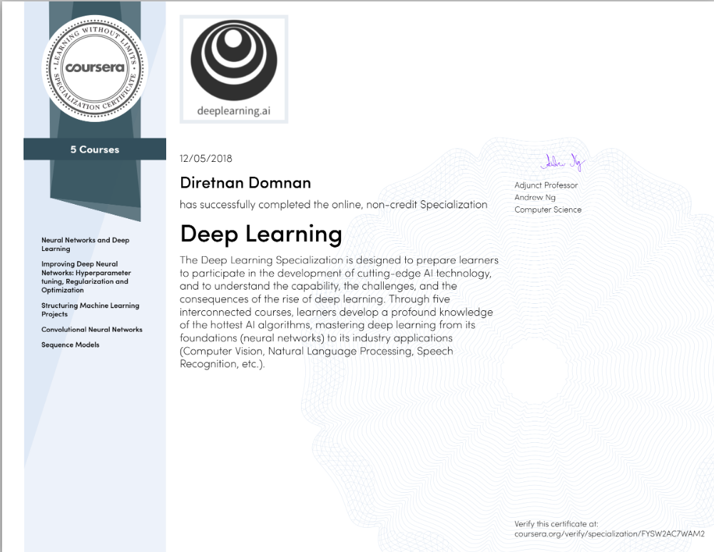
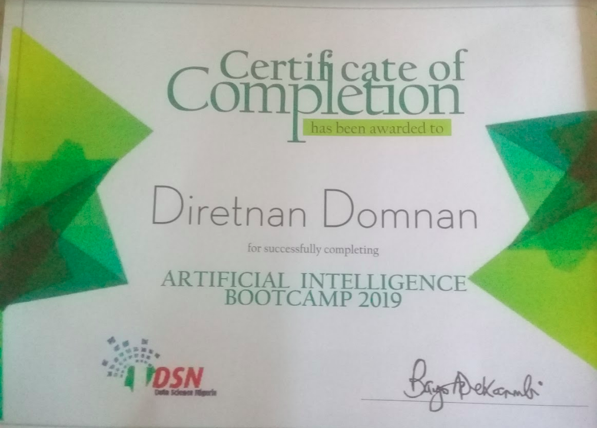

The prediction engine responsible for powering the imageQ reverse image search engine. Makes use of the 1000 available classes of a pretrained ResNet-50 model with imagenet weights
Technologies Used: Keras, Flask
Open sourced web API to classify toxicity levels in a sentence.
Technologies Used: Keras, BigML, Flask
Python library to aid easy training of Generative Adversarial Networks.
Technologies Used: Keras
Jupyter Notebook for coming 2nd place in the DeepQuest 2018 HackExpo.
Technologies Used: Keras, Matplotlib, Pandas
Jupyter Notebook for testing out Diabetes prediction using a public kaggle dataset.
Technologies Used: Keras, Matplotlib, Pandas, Numpy
You will learn about Convolutional networks, RNNs, LSTM, Adam, Dropout, BatchNorm, Xavier/He initialization, and more. You will work on case studies from healthcare, autonomous driving, sign language reading, music generation, and natural language processing. You will master not only the theory, but also see how it is applied in industry. You will practice all these ideas in Python and in TensorFlow, which we will teach. You will also hear from many top leaders in Deep Learning, who will share with you their personal stories and give you career advice.
AI is transforming multiple industries. After finishing this specialization, you will likely find creative ways to apply it to your work.
We will help you master Deep Learning, understand how to apply it, and build a career in AI.

The bootcamp 100 days pre-qualification classes included theoretical courses that ran on YouTube and a special Microsoft Azure course to build industry-ready capacity. Several industry experts were also invited to come and lecture at the 7 day bootcamp e.g Dr Stephen Odaibo, Prof. Thomas Dietterich
